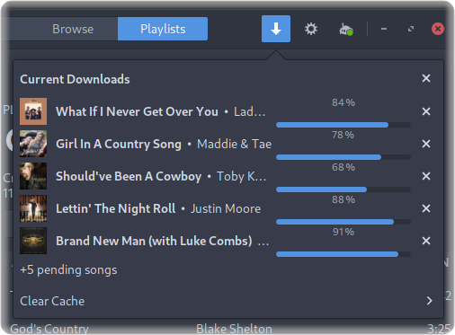

The most beautiful Subsonic client.
Sublime Music is a feature-packed native GTK client for Subsonic-compatible servers.

FEATURES

Download Songs for Offline Listening
Sublime Music allows you to download your songs for offline listening.
Desktop Integration
Sublime Music integrates seamlessly with your desktop environment via an MPRIS
interface.
Control Sublime Music using playerctl,
i3status-rust, KDE Connect, and many commonly used desktop environments.
INSTALL

Install sublime-music from the AUR.
yay -S sublime-music